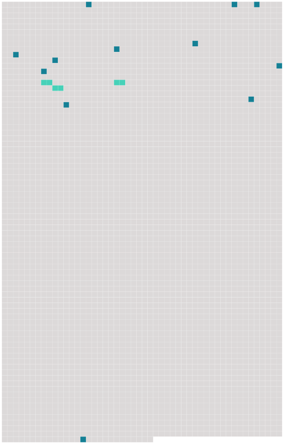

Longueur nb maillons : 15 mentions |
 |
Tu m'as écrit, dans ta dernière lettre : « Quand je sais comment [on] aime dans un pays, je connais ce pays à le décrire, bien que ne l'ayant jamais vu. » Sache qu'ici [on] aime furieusement.
[On] sent, dès les premiers jours, une sorte d'ardeur frémissante, un soulèvement, une brusque tension des désirs, un énervement courant au bout des doigts, qui surexcitent à les exaspérer nos puissances amoureuses et toutes nos facultés de sensation physique, depuis le simple contact des mains jusqu'à cet innommable besoin qui nous fait commettre tant de sottises. [7 phrases]
J'excepte dans ma comparaison cette invraisemblable baie de Porto, ceinte de granit rouge, et habitée par les fantastiques et sanglants géants de pierre qu' [on] appelle les « Calanche » de Piana, sur les côtes Ouest de la Corse. De loin, de très loin, avant de contourner le grand bassin où dort l'eau pacifique, [on] aperçoit Bougie. [1 phrases]
C'est une tache blanche dans cette pente verte ; [on] dirait l'écume d'une cascade tombant à la mer. [1 phrases] De partout l'oeil embrasse un vaste cercle de sommets crochus, dentelés, cornus et bizarres, tellement formé qu' [on] découvre à peine la pleine mer, et que le golfe a l'air d'un lac. [3 phrases] Sur le quai, en arrivant, [on] rencontre un débris si magnifique, qu' [on] le dirait d'opéra. [5 phrases]
Elles ont, au premier, une grande salle fraîche où [l'on] passe les jours, et tout en haut une terrasse où [l'on] passe les nuits. [1 phrases]
C'est l'heure étouffante d'Afrique, l'heure où [l'on] ne respire plus, l'heure où les rues, les plaines, les longues routes aveuglantes sont désertes, où tout le monde dort, essaye au moins de dormir, avec aussi peu de vêtements que possible. [6 phrases] Dans le désert, [on] commettrait toutes les infamies pour un verre d'eau claire et froide. Que ne ferait [-on] pas en certaines villes du littoral pour une belle fille fraîche et saine?? [141 phrases]
.. |
 |
La ressource peut être téléchargée sur la page Ortolang
Si vous avez des questions ou vous voyez des erreurs, merci d'envoyer un mail à silvia.federzoni89@gmail.com
Site développé par S. Federzoni (contact)